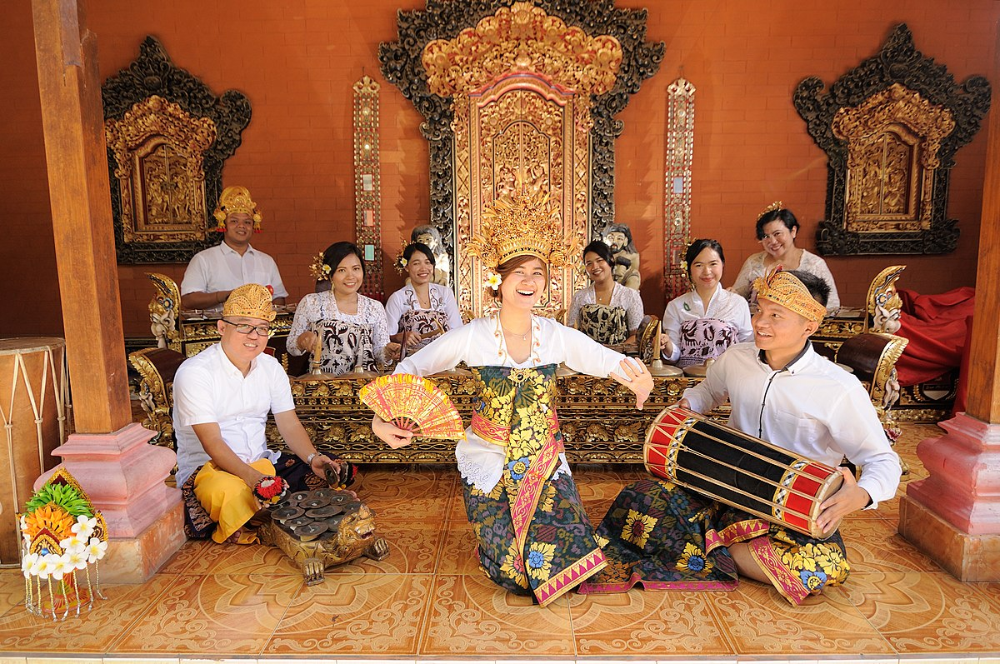

Gamelan Bali adalah salah satu jenis gamelan yang ada di Indonesia. Gamelan Bali sangat khas terutama melalui bunyinya yang meledak-ledak, berkecepatan tinggi, serta bagian gending yang lebih dinamis. Ritme musik yang cepat terutama disebabkan oleh perangkat berbentuk seperti simbal berukuran kecil yang biasa disebut Ceng-Ceng. Dalam pengkategorian Gamelan Bali telah disebutkan bahwa Gamelan Wayah adalah jenis yang paling tua dari Gamelan Bali. Alat musik yang berhubungan dengan gamelan tersebut menunjuk pada pemain alat musik tersebut yaitu penabuh gamelan (pemukul), pesinden (pagending), penabuh angklung (pabunying), penabuh kendang (papadaha), peniup suling besar (parbhangsi), perkumpulan topeng (partapukan), dan dalang (parbwayang).

Tari Kecak juga dikenal sebagai "Tari Api", adalah tarian yang menggambarkan kisah dari Ramayana, khususnya penculikan Dewi Sita oleh Rahwana. Tari ini unik karena tidak diiringi oleh alat musik, melainkan oleh paduan suara pria yang duduk melingkar dan mengeluarkan suara "cak" berulang kali, menciptakan irama yang menegangkan. Penari-penari Kecak biasanya mengenakan sarung kotak-kotak hitam putih dan melakukan gerakan tari yang dinamis di sekitar api.

Tari Barong adalah tarian tradisional yang menggambarkan pertarungan antara kebaikan (dilambangkan oleh Barong) dan kejahatan (dilambangkan oleh Rangda). Barong adalah makhluk mistis yang sering digambarkan sebagai binatang berkaki empat dengan wajah yang menyerupai singa. Tari ini biasanya dipentaskan di halaman pura dengan iringan musik gamelan.